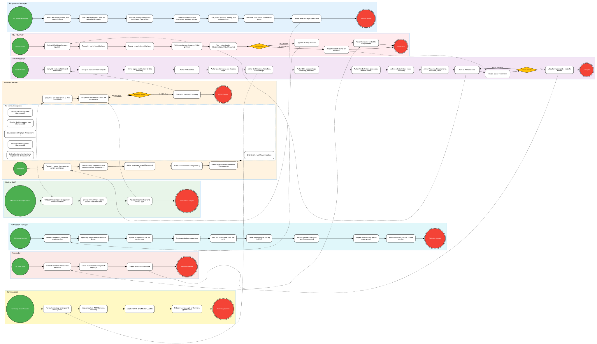

Overview
WHO SMART Guidelines (Standards-based, Machine-readable, Adaptive, Requirements-based, and Testable) are a set of WHO clinical guidelines that have been transformed into a computable, interoperable format. They enable countries to rapidly adopt, adapt, and implement WHO recommendations within their digital health systems by providing structured, machine-readable clinical content.
A Digital Adaptation Kit (DAK) is the primary artefact of WHO SMART Guidelines. It is a structured, standardised package of clinical and operational content that represents a WHO health intervention in a computable form. Each DAK contains:
- Health interventions and recommendations – the clinical guidance from WHO
- Generic personas – representative end-users and actors in the health system
- User scenarios – narrative descriptions of how the guidance is used in practice
- Business processes and workflows – step-by-step care pathways
- Core data elements – the data dictionary for the health domain
- Decision-support logic – computable clinical decision rules
- Functional and non-functional requirements – system capability requirements
- Program indicators – aggregate measures and metrics for monitoring and evaluation
- Test scenarios – structured tests to validate conformance
The diagram below illustrates the nine components of a WHO DAK and how they relate to one another:

This implementation guide contains base conformance resources for use in all WHO SMART Guidelines implementation guides.
Authoring Lifecycle
The DAK authoring lifecycle is a five-phase process spanning planning, L2 DAK authoring, L3 FHIR authoring, quality control, and publication. The BPMN 2.0 collaboration diagram below shows the end-to-end process with swimlanes for each authoring persona.

See the SMART IG Starter Kit for more information on building and using WHO SMART Guidelines.
DAK (Digital Adaptation Kit) URL Handling
For repositories that contain a dak.json file in the root directory, this implementation guide provides enhanced URL handling for publication and preview scenarios:
Publication URLs
- WHO Repositories: For repositories owned by
WorldHealthOrganization, the publication URL follows the patternhttps://smart.who.int/{stub}where{stub}is the repository name with anysmart-prefix removed. - Other Repositories: Use the canonical URL specified in
sushi-config.yamlor fall back to GitHub Pages pattern.
Preview URLs
- All Repositories: Preview URLs use the GitHub Pages pattern
https://{profile}.github.io/{repo}for current CI builds.
Branch-Based URL Selection
- Release Branches (prefixed with
release-): Use publication URLs for canonical references and resource identifiers. - Development Branches: Use preview URLs for canonical references and resource identifiers.
The DAK configuration is automatically regenerated during CI builds to ensure URLs are appropriate for the current branch context.
Dependencies
⟦not rendered: dependency-table-short.xhtml⟧ — the IG Publisher renders it from a source this build does not hold; no renderer was given to this build.
Cross Version Analysis
⟦not rendered: cross-version-analysis.xhtml⟧ — the IG Publisher renders it from a source this build does not hold; no renderer was given to this build.
Global Profiles
⟦not rendered: globals-table.xhtml⟧ — the IG Publisher renders it from a source this build does not hold; no renderer was given to this build.
IP Statements
⟦not rendered: ip-statements.xhtml⟧ — the IG Publisher renders it from a source this build does not hold; no renderer was given to this build.